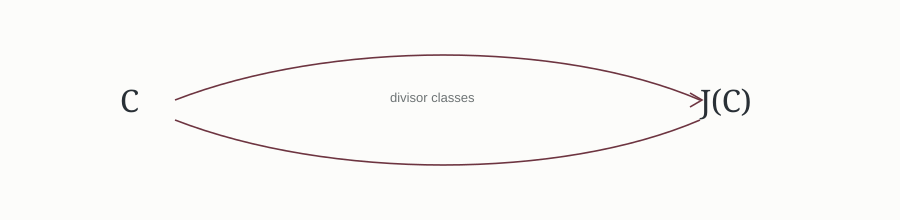

Why does the Jacobian matter?

A short introduction to the Jacobian of a curve and why divisor classes become useful in arithmetic questions.
Short mathematical notes, explanations, and experiments related to my research.

A short introduction to the Jacobian of a curve and why divisor classes become useful in arithmetic questions.
How a Diophantine problem can be translated into geometry.
Examples and finite-field computations used as a laboratory for mathematical questions.